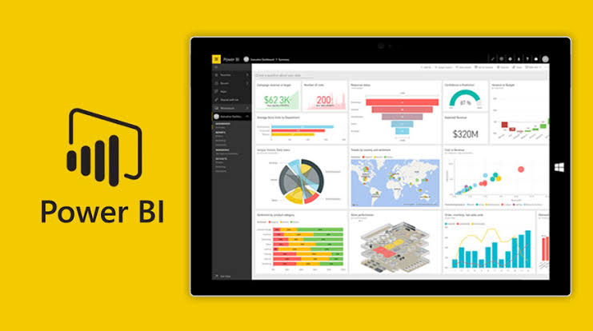
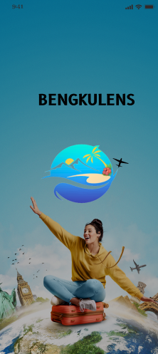

All Projects
A collection of projects covering AI research, machine learning models, medical image processing, and full-stack deployment implementations.

Tourism Destination Analytics Dashboard
Built an end-to-end Business Intelligence dashboard using Microsoft Power BI by performing data cleaning, outlier detection, DAX modeling, and interactive visualization for tourism destination analysis across five major cities on Java Island.
Healthcare Workforce Mental Health Dashboard
An interactive workforce analytics dashboard using Microsoft Excel to analyze employee burnout, job satisfaction, and turnover intention from 5,000 healthcare records.

Two-Stage Stroke Classification and Detection System
An automated stroke classification system based on CT scan images using YOLOv11 object detection and Radiomics texture analysis.

SILAB - Informatics Laboratory Information System
A web application designed to support learning activities in the Informatics Laboratory.

ACNIVERSE
AI implementation and FastAPI backend integration for serving a YOLOv8 deep learning model for acne detection.

Bengkulens App
Mobile application design for Bengkulens, providing recommendations for tourist destinations in Bengkulu Province.

ChatGPT Sentiment Analysis
This project analyzes public sentiment toward the ChatGPT AI application.

Payroll Management Database System
Designed an ERD and developed a database for a payroll management system.